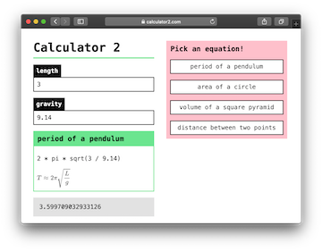
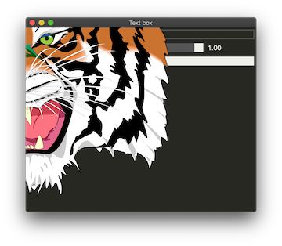
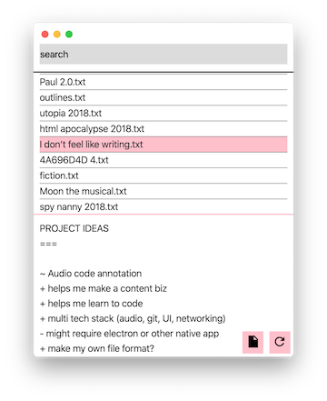
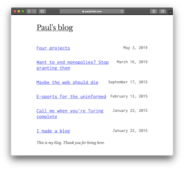

calculator 2
The sequel to calculators. A declarative, rather than imperative, approach to calculator UX.
Technologies:
- Svelte 3 (UI)
- Rust / WASM (calculation)
- Webpack (math -> SVG)
svg-to-piet
A very fun hack to produce piet draw instructions from an SVG input.
Technologies:
- Rust macros (this library)
- Piet (what it's for)
- SVG (the tiger)
fragment notes
A note search app to replace Notational Velocity (RIP).
Technologies:
- Electron / Svelte (app)
- Neon (Rust in Node)
- Rust (ripgrep search)
my-own-personal-blog (meta)
You are here. There are many static site generators, but this one is mine.
Technologies:
- Rust (site generation)
- HTML / CSS (by hand)
- Zeit Now (deployment)